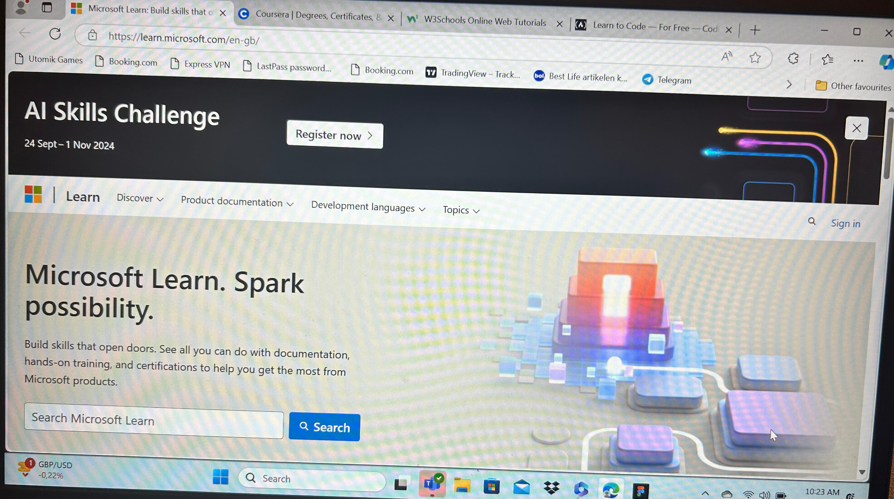
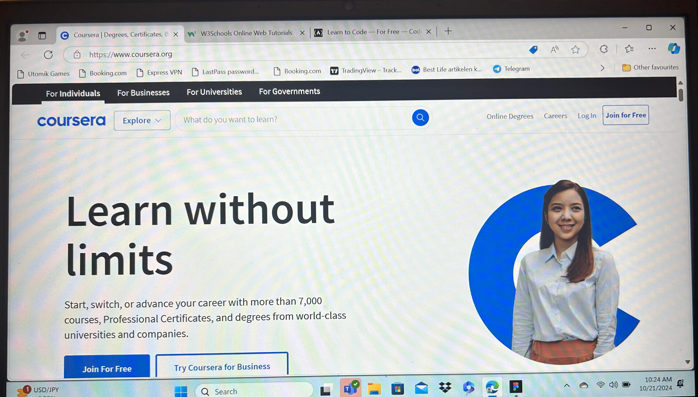
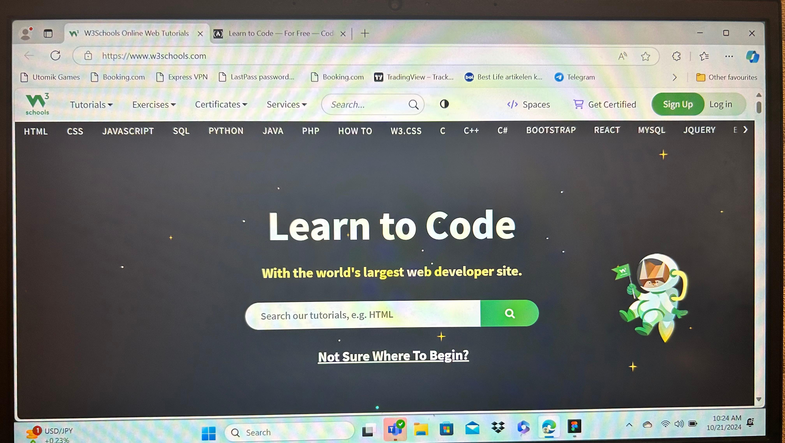

Microsoft Learn
Why it’s important: This is the official learning platform from Microsoft, making it one of the most
trusted and reliable sources for learning IT skills. It covers everything from basic IT concepts to
advanced topics like cloud computing, Azure, and C# programming. You can follow structured learning
paths, which makes it perfect for beginners and intermediate learners.
Best for: Programming (C#, .NET), Cloud Computing (Azure), and Microsoft Technologies.
Key features: Free, interactive, with hands-on labs and certifications.

Coursera
Platform:
Coursera
Why it’s important: Coursera offers courses from top universities and companies like Google and IBM.
This makes it one of the best places to learn IT fundamentals, cybersecurity, data science, and
programming from real experts. You can audit many courses for free, and the flexibility to learn at your
own pace is a huge plus.
Best for: High-quality, professional IT courses from universities (cybersecurity, programming, data
science).
Key features: University-quality education, free auditing, and certificates available.

W3schools
Platform:
W3Schools
Why it’s important: W3Schools is perfect for beginners who want to learn web development and basic
programming. It offers simple, step-by-step tutorials on languages like HTML, CSS, JavaScript, SQL, and
Python. It’s easy to follow and great for anyone just starting out, with plenty of examples and
interactive coding exercises.
Best for: Beginners learning web development (HTML, CSS, JavaScript) and programming (Python, C#).
Key features: Free, beginner-friendly, interactive coding practice.
